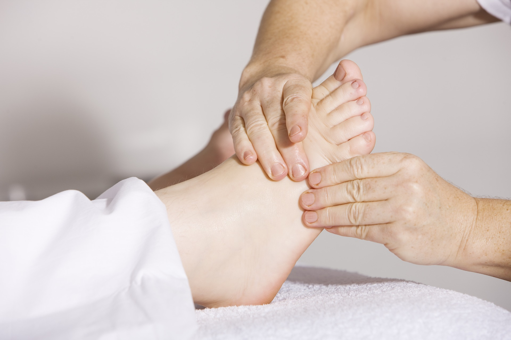

Balinese massage
De Balinese massage is een zachte massage welke wordt afgestemd met de klant. deze massage werkt onstpannend,
stimuleert de doorbloeding en zorgt ervoor dat afvalstoffen het lichaam kunnen verlaten via de huid en andere organen.
Bij deze massage wordt gebrukt gemaakt van massage olie en kruiden.
Ontspannings massage
De ontspanningsmassage is bedoeld om los te komen van de dagelijkse stress in lichaam en geest en laat het lichaam weer
ervaren hoe het is om weer ontspannen te zijn.
Bij deze massage worden trage knedende massagebewegingen gebruikt die de spieren ontspannen en de bloedsomloop stimuleren.
Je kunt kiezen voor een massage van het gehele lichaam of een deel van het lichaam.
Body scrub & mandi lulur
Bij een body scrub worden de korrels in de creme die ik gebruik met een draaiende beweging in de huid gewreven.
Dit stimuleert de huid waardoor deze open gaat staan en laat het meer toe. Het is dus heerlijk voor de huid en het verwijderd dode huidcellen.
De doorbloeding wordt gestimuleerd en scrubben zorgt voor een betere zuurstof opname door de huid.
De huidfuncties zullen zichtbaar verbeteren en het geeft een verkwikkend gevoel.
Hoofd, nek arm en schouder massage
Balinese hoofd, nek en schouder massage is een gecombineerde massage van chinese acupressuur en westerse
massage technieken en werkt erg ontspannend. Vastzittende schouders door stress of een verkeerde houding worden los gemasseerd.
De hoofdmassage vermindert de kans op hoofdpijn. Ook is deze massage goed voor de bloedsomloop en zorgt voor een snellere afvoer van afvalstoffen.
U kunt met de masseuse afstemmen welke ledematen behandeld moeten worden.

Voetreflex massage
Voetreflex massage is een massage van de gehele voet waarin de zenuwbanen van het gehele lichaam zijn afgespiegeld.
Eerst word de voet gereinigd met een natte handdoek en afgedroogd waarna de voet word gemasseerd en gekneed. Alle organen
van de mens zij terug te vinden op de voetzool. Tijdens deze massage kan je een lichte pijnprikkel voelen die een blokkade
in het bijbehorende orgaan aangeven. Door zacht te drukken op deze punten worden blokkades verminderd of opgeheven.
Stoelmassage
Bij de stoel massage wordt er over de kleren heen gemasseerd en helpt tegen stress op het werk en rsi klachten.
Door het masseren van drukpunten en rustgevende strijkingen gaat de energie door het lichaam stromen en wordt het
immuunstelsel gestimuleerd. Regelmatig een stoel massage te nemen is goed voor de gezondheid.

Basis gezichtsbehandeling
Een fijne ontspannende gezichtsbehandeling waarbij eerst uw gezicht wordt gereinigd. Daarna wordt de huid gescrubt, gemasseerd en gestoomd.
Door het stomen gaan vuiligheid zoals mee eters en dode huidcellen los zitten en zij ze makkelijker te verwijderen. Als het gezicht is schoongemaakt wordt
het gewassen. Hierna volgt nog een masker en wordt een tonic aangebracht.
Spa pedicure onderbeenscrub
Een verzorgende behandeling van de voet. De voeten worden gereinigd in een voeten bad waarna de nagels worden geknipt en gepolijst.
De voeten en onderbenen worden gescrubbed en gemasseerd. Dit heeft een onstannende en rustgevende werking.